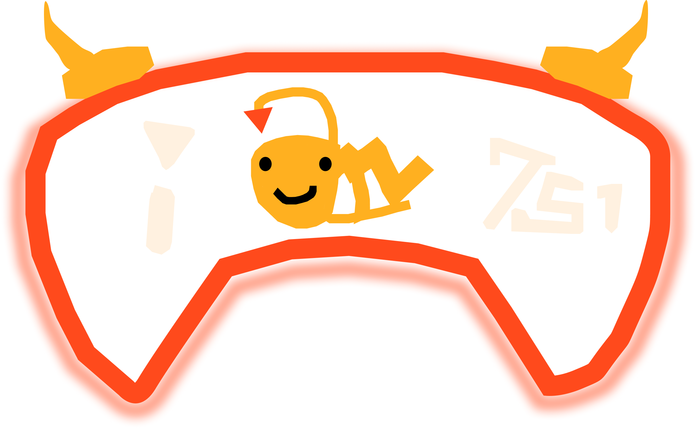

UI/UX DESIGNER
I am a multi-disciplinary UI/UX designer in GAME DEVELOPMENT Industry and passionate about crafting immersive, user-centered digital environments. I blend tactile interface design, soundscapes, and interactive mechanics to craft engaging user experiences.
Whether I'm wireframing game interfaces, mapping user journeys, or prototyping interactive levels, my goal is always the same: make it intuitive, beautiful, functional and engaging.
Figma, Adobe After Effects, Wireframing, User Research, Prototyping, Interactive Layouts
Unity, Level Design, User Interface Development
Github, Adobe Photoshop, Figma, Audacity